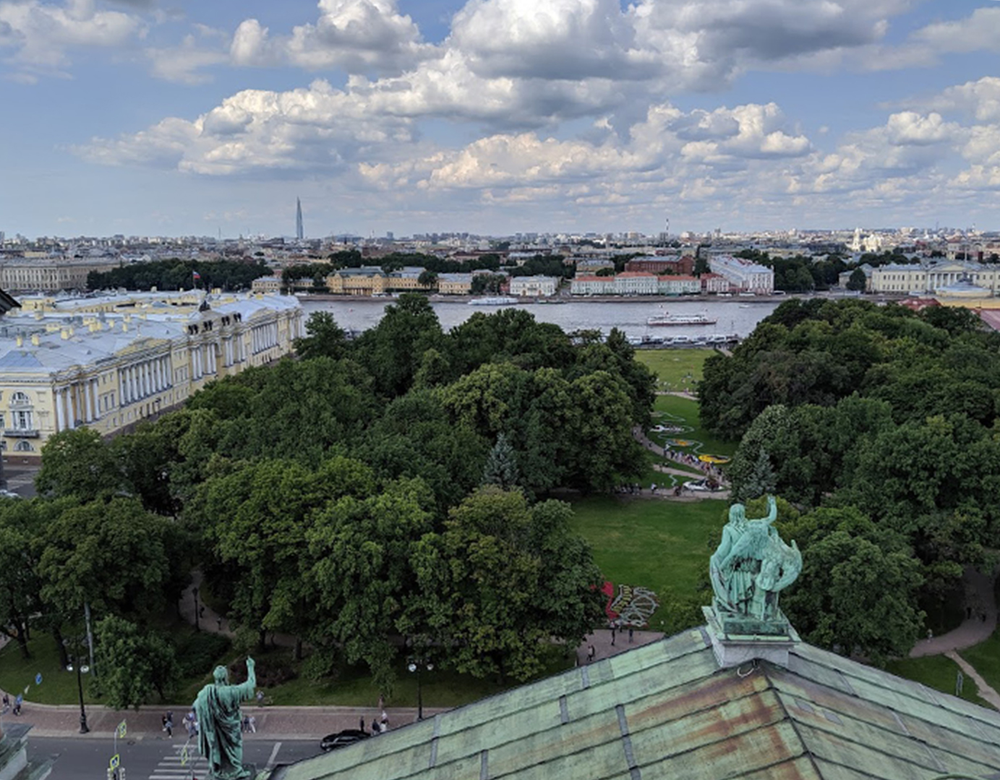
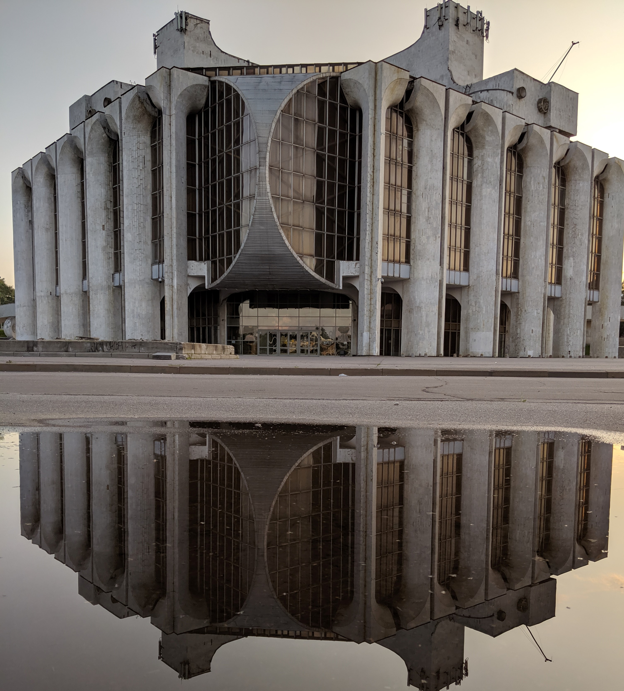

Explore:
St. Petersburg
Russia
The second largest city in Russia, St. Petersburg is the country’s cultural heart. View splendid architectural gems like the Winter Palace and the Kazan Cathedral, and give yourself plenty of time to browse the world-renowned art collection of the Hermitage. Sprawling across the Neva River delta, St. Petersburg offers enough art, nightlife, fine dining and cultural destinations for many repeat visits.

Founded in 1703, the city of St Petersburg and its signature, colourful and eclectic style has evolved over time, creating a marvellous kaleidoscope of construction, ranging from Baroque-style buildings to Soviet architecture, Neoclassical structures to Style Moderne.

Built on a series of natural islands and carved through by a number of canals and the Neva River, this city on the Gulf of Finland is home to some of Russia’s greatest national treasures, from the magnificent Hermitage Museum, housed in the tsars’ Winter Palace; to the Peter and Paul Cathedral, where Peter the Great and other Romanovs are buried; to the grandiose Palace Square, the central square at the end of Nevsky Prospekt.“It is the most European city in Russia, both geographically and mentally."

Bridges
There are more than 342 bridges in St. Petersburg. This is one of the many draw bridges on the Neva.

Brutalism
Architecture spanning from Baroque to Soviet Space-Age, this is Dostoevsky's Drama Theatre in Novgorod.
Palaces
Residence of Czars, St. Petersburg has many palaces. This is Petergof, the summer palace of Peter the Great.
Made by Junshen Gao